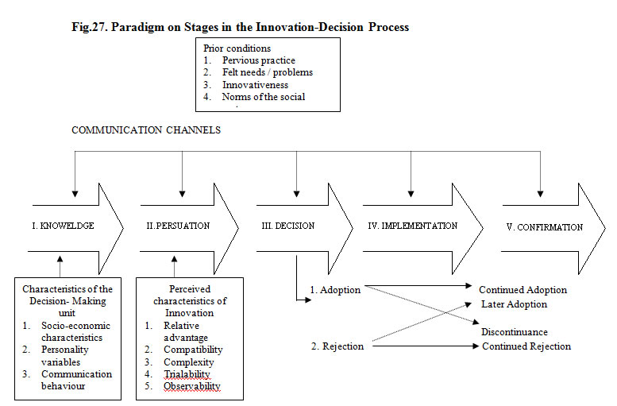

AEXT 392 :: Lecture 01 :: Communication -Meaning, Definition, Models, Elements , Barriers

COMMUNICATION
According to Leagans (1961), Communication is the process by which two or more people exchange ideas, facts, feelings or impressions in ways that each gains a common understanding of the meaning, intent and use of messages. The term 'communication' stems from the Latin word 'communis'-meaning' 'common'. Communication, then, is a conscious attempt to share information, ideas, attitudes and the like with others. In essence it is the act of getting a sender and a receiver tuned together for a particular message, or a series of message. "Communication means the movement of knowledge to people in such ways that they act on that knowledge to achieve some useful result. This result may range all the way from a small improvement in doing some productive task, to the generation of a sense of national unity and strength in a country. Communication in this sense includes the whole learning process. It encompasses the teacher- the message or material to be taught- the means or media used to carry the message -the treatment given by those media- the learning achieved by the audience or student- and the actions by which the learning is put into practice". (Winfield (1957).
Good communication does not consist merely of giving orders, but of creating understanding. It does not consist merely of imparting knowledge, but of helping people gain a clear view of the meaning of knowledge. Most of the progress in the future will stem from better technology and greater skill in communicating it to others. Too many people saying the wrong things at the wrong time, in the wrong way, to the wrong people, slows down progress. What is needed is more people saying the right things at the right time, in the right way, to the right people. This is the formula for good communication.
Importance of Communication
- Communication establishes a favourable climate in which development can take place.
- Communication has multiplier effect
- Communication varies the aspirations of the people
- Communication is essential for all human activities
- Communication is essential for good leadership
-
The Communicator
This is the person who starts the process of communication in operation. He is the source or originator of messages. He is the sender of messages. He is the first to give expression to message intended to reach an audience in a manner that results in correct interpretation and desirable response. When a communicator does not hold the confidence of his audience, communication as conceived will not take place.
The following are the good qualities of a good communicator :
1. The Communicator Knows -
- the specifically defined objectives.
- the needs, interests, abilities etc. of the audience.
- the content, validity, usefulness and importance of the message
- the channels that will reach the audience and their usefulness
- the tactics of organising and treating the message
- his/her professional abilities and limitations.
2. The communicator is interested in -
- the intended audience and their welfare
- the specific message and its effects in helping the people
- the entirety of communication process
- the proper use and limitation of communication channels.
3. The communicator prepares -
- a specific teaching plan for communication
- materials and equipments needed for communication
- a plan for evaluation of results.
4. The communicator has skill in
- selecting messages
- treating messages
- expressing messages in verbal and written forms
- the selection and use of channels
- understanding the audience
- collecting evidence of results.
In contrast to the above, the following are the qualities of a poor communicator :
- Fail to have ideas to present that are really useful to the audience.
- Fail to give the complete story and show its relationship to people's problems
- Forget that time and energy are needed to absorb the material presented.
- Feel they are always clearly understood.
- Refuse to adjust to 'closed' minds.
- Talk while others are not listening.
- Get far too ahead of audience understanding.
- Fail to recognise others' view - point and develop presentation accordingly
- Fail to recognise that communication is a two-way process.
- Let their own biases over-influence the presentation.
- Fail to see that everyone understands questions brought up for discussion
- Fail to provide a permissive atmosphere.
- Disregard the values, customs, prejudices and habits of people with whom they attempt to communicate.
- Fail to start where people are, with respect to knowledge, skill, interest and need.
2. Message or content
A message is the information communicator wishes his audience to receive, understand, accept and act upon. Messages, for example, may consist of statements of scientific facts about agriculture, sanitation or nutrition; description of action being taken by individuals, groups or committees ; reasons why certain kinds of action should be taken ; or steps necessary in taking given kinds of action.
Features of a good message
A good message must be -
- in line with the objectives to be attained.
- clearly understandable by the audience
- in line with the mental, social, economic and physical capabilities of the audience
- significant-economically, socially or aesthetically to the needs, interests and values of the audience.
- specific in terms of audience and locale
- accurate so as to be scientifically sound, factual and current in nature.
- appropriate to the channel selected.
- appealing and attractive to the audience signifying the utility values and immediacy of use.
- adequate in such a way to have effective proportionate combination of principle and practice manageable so as to be handled by the communicator within the resources availability.
In contrast, poor communicators often commit the following which mar the effectiveness of message sending :
- Fail to clearly separate the key message from the supporting content or subject-matter.
- Fail to prepare and organise their message properly.
- Use inaccurate of 'fuzzy' symbols-words, visuals, or real objects-to represent the message.
- Fail to select messages that are sharply in line with the felt needs of the audience.
- Fail to present the message objectively-present the material, often biased, to support only one side of the proposition.
- Fail to view the message from the standpoint of the audience.
- Fail to time the message properly within a presentation or within a total programme.
Selecting and 'packaging' messages so they have a good chance of being understood, accepted and acted upon when received is a crucial step in the communication process. It is one of the six keys to success in efforts to influence people to change their ways of thinking and of doing, that lead to social and economic improvement.
3. Channels of Communication
The sender and the receiver of messages must be connected or 'tuned' with each other. For this purpose, channels of communication are necessary. They are the physical bridges between the sender and the receiver of messages-the avenues between a communicator and an audience on which messages travel to and for. They are the transmission lines used for carrying messages to their destination. Thus, the channels serve as essential tools of the communicator.
A channel may be anything used by a sender of messages to connect him with intended receivers. The crucial point is that he must get in contact with his audience. The message must get through.
However, channels are no good without careful direction or use in the right way, at the right time, to do the right job, for the right purpose with the right audience, all in relation to the right message. So, proper selection and use of channels constitutes a third determinant of successful communication. Without proper use of channels, messages, no matter how important, will not get through to the intended audience.
Many obstructions can enter channels. These are often referred to as 'noise' - that is, some obstruction that prevents the message from being heard by or carried over clearly to the audience. 'Noise' emerges from a wide range of sources and causes.
Sources and causes for noise:
- Failure of a channel to reach the intended audience. Usually, no one channel will reach an entire audience. Some examples: Meetings-all people cannot or may not attend. Radio-all people do not have access to a receiving set or may not be tuned in if they did. Written material-many people cannot read, and others may not.
- Failure on the part of a communicator to handle channels skillfully. If a meeting, tour, radio programme or any other channel is not used according to good procedure and technique, its potential for carrying a message is dissipated.
- Failure to select channels appropriates to the objective of a communicator. All channels are not equally useful in attaining a specific objective.
- Failure to use channels in accordance with the abilities of the audience. Written materials, for example, cannot serve as useful channels for communicating information to people who are unable to read or to understand the level of complexity or abstraction of the message.
- Failure to avoid physical distraction. When using the channel of meetings, for example, distractions including people moving in and out, loud noises in or out of the group, heat, lighting, crowded condition and many other forms of distraction often obstruct successful message sending.
- Failure of an audience to listen or look carefully. The only messages that get through to an audience are those which are heard, seen or experienced. An unfortunate tendency of people is not to give undivided attention to the communicator. This is a powerful obstruction that prevents messages from reaching desired destination.
- Failure to use enough channels in parallel. The more channels a communicator uses in parallel or at about the same time,. the more chances he has for the message getting through and being properly received . No single channel will ordinarily reach all people who need to receive a message. Research indicates that up to five or six channels used in combination are often necessary to get a message through to large numbers of people with enough impact to influence significant changes in behaviour.
- Use of too many channels in a series. An important principle of communication is that the more channels used in a series the less chance a communicator has for getting his message through to the intended audience. In this context, the following principles are to be borne in mind : (1) The more steps by which the communicator is removed from his intended receiver, the greater are his chances of losing the proper message. (2) When lines of communication get too long for assured communication they can be improved in two primary ways : (a) by using additional channels in parallel, and (b) by eliminating some of the channels in the series.
4. Treatment of Messages
Treatment has to do with the way a message is handled to get the information across to an audience. It relates to the technique, or details of procedure, or manner of performance, essential to expertness in presenting messages. Hence, treatment deals with the design of methods for presending messages. Designing the methods for treating messages does not relate to formulation of the message or to the selection of channels, but to the technique employed for presentation within the situation provided by a message and a channel.
The purpose of treatment is to make the message clear, understandable and realistic to the audience. Designing treatment usually requires original thinking, deep insight into the principles of human behaviour and skill in creating and using refined techniques of message presentation.
Treatment of messages can be varied in an almost infinite number of ways. The following are the three categories of bases useful for varying treatment
A. Matters of general organisation:
- Repetition of frequency of mention of ideas and concepts.
Contrast of ideas.
- Chronological-compared to logical, compared to psychological.
- Presenting one side compared to two sides of an issue.
- Emotional compared to logical appeals.
- Starting with strong arguments compared to saving them until the end of presentation.
- Inductive compared to deductive.
- Proceeding from the general to the specific and vice versa.
- Explicitly drawing conclusions compared to leaving conclusions implicit for the audience to draw.
B. Matters of speaking and acting:
- Limit the scope of presentation to a few basic ideas and to the time allotted. Too many ideas at one time are confusing.
- Be yourself. You can't be anyone else. Strive to be clear, not clever.
- Know the facts. Fuzziness means sure death to a message.
- Don't read your speech. People have more respect for a communicator who is sure of his subject.
- Know the audience. Each audience has its own personality. Be responsive to it.
- Avoid being condescending. Do not talk or act down to people, or over their heads.
- Decide on the dramatic effect desired. In addition to the content of messages, a communicator should be concerned with 'showmanship'. Effective treatment requires sincerity, smoothness, enthusiasm, warmth, flexibility and appropriateness of voice, gestures, movements and tempo.
- Use alternative communicators when appropriate, as in group discussions, panels, interviews, etc.Remember that audience appeal is a psychological bridge to getting a message delivered.
- Quit on time. Communicators who stop when they are 'finished' are rewarded by audience goodwill.
C. Matters of symbol variation and devices for representing ideas:
To represent ideas by effective treatment with reference to the desired behavioural changes, a variety of audio-visual aids may be used. Communicators should be aware that teaching message to achieve maximum audience impact is a highly professional task. Treatment is a creative task that has to be 'tailor-made' for each instance of communication. Experience, thinking and planning, skill in verbalisation and writing, understanding of the principles of teaching and learning, knowledge of a) the subject b) the audience to be reached and c) skill in the use of channels etc will help the communicator to undertake the process of message treatment.
5. The Audience
An audience is the intended receiver of message. It is the consumer of messages. It is the intended respondent in message sending, and is assumed to be in a position to gain economically, socially or in other ways by responding to the message in particular ways. In good communication the communicator already identifies the audience aims at..
The importance of clearly identifying an audience cannot be over-stressed. The more homogeneous an audience, the greater the chances of successful communication. Likewise, the more a communicator knows about his audience and can pin-point its characteristics the more likely he is to make an impact.
The following are some of the issues to clarify the nature of audience:
- Communication channels established by the social organisation.
- The system of values held by the audience-what they think is important.
- Forces influencing group conformity-custom, tradition etc.
- Individual personality factors-susceptibility to change etc.
- Native and acquired abilities.
- Educational, economic and social levels.
- Pressure of occupational responsibility-how busy or concerned they are.
- People's needs as they see them, and as the professional communicator sees them.
- Why the audience is in need of changed ways of thinking, feeling and doing.
- How the audience views the situation.
It is useful to a communicator to understand these and other traits of an audience in making his plan for communication.
6. Audience Response
This is the terminating element in communication applied to rural development programmes. Response by an audience to messages received is in the form of some kind of action of some degree, mentally or physically. Action, therefore, should be viewed as a product, not as a process; it should be dealt with as an end, not as a means. Consequently, the five elements hither to analysed viz., communicator, message, channel, treatment and audience are intended to be viewed as an organised scheme (means) for attaining the desired action (end) on the part of an intended audience.
COMMUNICATION MODELS
Models- Definitions
In social science research, a model is a tentative description of what a social process, say the communication process or a system might be like. It is a tool of explanation and analyses, very often in a diagrammatic form, to show how the various elements of a situation being studied relate to each other. Models are not statements of reality. Only after much further research and testing would the model be considered viable. It could then be developed into a theory. The term model can also refer to a particular process or object, which is used as a point of reference, when an attempt to explain the unknown is being made. It comprises involving an analogy to throw up the similarities between the phenomena to be explained and one, which is well known, i.e., the model.
Additionally the model can be a person whose behaviour others wish to emulate or who they wish to model themselves after.
The simplest definition of a model is that it is an analogue. A model is a relatively well-developed analogy. Given two objects or processes, which are dissimilar in many respects, one is an analogue of the other to the extent that the physical or logical structure of one re-presents the physical or logical structure of the other.
The advantage of models in communication research is that it allows the researcher to account for different variables in different communication situations. Models only represent systems or processes. Since they are not real, they are just symbolic ways of looking at systems to help us to think about them more lucidly. Again since models do not show every part of a system, they are usually incomplete in that sense. Even those that are shown are represented only in enough detail to help us look at the processes or features in which we are interested. Mo0dels give us an idea of complicated objects or events in a general way. They enable us to see how a particular communication event fits into the general pattern. They provide a classification for an orderly nature of events and suggest new ways of looking at old problems, and familiar events. They help us by providing a structure of reference for purposes of study. Theories are not models and the most fundamental difference between a theory and a model is that the former is an explanation whereas the latter is a representation.
Communication Models
1. Aristotle's Model of Communication
Fig.18. Aristotle Model
Aristotle’s Model of Communication (Devito, 1978)
The earliest model of communication was the symmetrical and simple model developed by the great Greek philosopher Aristotle some 2000 years before. Aristotle in his model includes the five essential elements of communication, i.e., the speaker, the speech or message, the audience, the occasion, and the effect. In his rhetoric, Aristotle advises the speaker on constructing a speech for different audiences on different occasions for different effects. This model is most applicable to public speaking.
2. Lasswell's Model (1948)
Lasswell has given us another simple model. His model belongs specifically to the area of mass communication. He argued that to understand the process of mass communication one needs to study each of the stages in his mode. "Who says what, in which channel, to whom, and, with what effect."

(Source: Public Opinion and Propaganda by Harold Lasswell, 1948)
This is the verbal version of Shannon and Weaver's original model. It is linear. It sees communication as the transmission of message. It raises the issue of the effect rather than meaning. Effect implies an observable and measurable change in the receiver that is caused by identifiable elements in the process. A change in one of these elements will change the effect. We can change the encoder. We can change the message. We can change the channel, and each one of these changes would produce the appropriate change in the effect. Most mass communication research has implicitly followed this model.
The work of institutions and their process on the producers of communication on the audience and how it is affected clearly derives from a process based linear model.
Lasswell's model - comments
Until the 1960s Lasswell's four questions (of who says what, by what channel, to whom and with what effect) dominated studies of the mass media in France. Not only his exemplary expression defines the different research areas for communication investigations, but also seemed to prescribe the appropriate concepts and methodological orientation to be followed. Thus, Lasswell's paradigm served the entire scientific community of communication scholars.
Fig.20.Lasswell'scommunicationmodel
It was Harold Lasswell who first precisely delineated the various elements, which constitute a "communication fact." According to him, one cannot suitably describe a "communication action" without answering the following questions: who said what, by what channel, to whom and with what effect?
Identification of transmitters, analysis of message content, study of transmission channels audience identification and evaluation of effects; these are the five parameters of communication studies. Michel Buhler represents the Lasswell model with the above diagram.
Along with other developments during this period were a number of writings that sought to provide description of the nature of the communication process. One of the most often cited political scientists Harold Lasswell advanced characterization communication in 1948 as an out growth of his work in the area of propaganda. Lasswell provided a general view of communication that extended well beyond the boundaries of political science. Lasswell's view of communication, as had Aristotle has some two thousand years earlier, focused primarily on verbal messages. It also emphasized the elements of speaker, messages, and audience, but used different terms. Both men viewed communication as a one way process in which one individual influenced others through messages. Lasswell offered a broadened of definition channel to include mass media along with verbal speech as a part of the communication process. His approach also provided a more generalized view of the goal or effect of communication than did the Aristotelian perspective. Lasswell's work suggested that there could be a variety of outcomes or effects of communication such as to inform, to entertain, to aggravate and to persuade (Brent, 1984).
3. Shannon and Weaver model (1949)
The preconception of the academic field of mass communication were heavily influenced by the engineering model of Shannon and Weaver (1949) Communication was conceived as a linear act of transmission of a message from a source to a receiver via a signal producing transmitter. A component called 'noise' acknowledged the presence of context in the electrical engineering model.
Shannon and Weaver’s mathematical theory of communication (1949) is widely accepted as one of the main seeds out of which communication studies have grown. It is a clear example of the process school, seeing communication as the transmissions of messages. The work developed during the Second World War in the Bell telephone laboratories in the US and their main concern was to work out ways in which channels of communication could be used most efficiently. For them, the main channels were the telephone, cable and the radio wave. They produced a theory that enabled them to approach the problem of how to send a maximum amount of information along a given channel to carry information. This concentration on the channel and its capacity is appropriate to their engineering and mathematical background, but they claim that their theory is widely applicable over the whole question of human communication.
Shannon and Weaver's model (1949) presents communication as a linear process. Its simplicity has attracted many derivatives, and its linear process centered nature has attracted many critics. Its obvious characteristics of simplicity and linearity standout clearly.
Fig.22. Shannon and weaver communication model
(Source: The Mathematical theory of communication. Claude E. Shannon and Warren Weaver, 1949).
Claude Shannon and Warren Weaver gave this model. As the diagram above indicates, this communication model comprises four elements. A source of information, with a greater or lesser number of messages to communicate; a transmitter or sender with the capacity to transform a message into a signal; a receiver which decodes the signal in order to retrieve the initial message, and finally, the destination, a person or thing for whom the message is intended. Communication, according to this model, follows a simple left to right process. The information source (say speaker), selects a desired message from all the possible messages. The message is sent through a transmitter (microphone) and is changed into signals. A receiver (say earphone), changed back into a message and given to the destination, a listener, receives the signals. In the process of transmission, certain distortions are added to the signal which are not part of the message and these will be called noise.
The basis of all contemporary Western theories of Communication - Shannon- Weaver model stresses the idea of inside and outside and assumes that communication is a lineal matching rather than making. The information source changes the message into the signal, which is actually sent over the communication channel from the transmitter to the receiver. In the case of telephony the channel is a wire the signal a varying electrical current on this wire, the transmitter is the set of devices (telephone transmitter etc.) which change the sound pressure of the voice into the varying electric current. In oral speech, the information source is the brain, the transmitter is the voice mechanism producing the varying sound pressure (the signal) which is transmitted through the air (the channel). In radio, the channel is simply space, and the signal is the electromagnetic wave, which is transmitted. The receiver is an inverse transmitter, changing the transmitted signal back into a message and handing this message on to the destination.
In the process of being transmitted, usually certain things are added to the signal, which were not intended by the sender. These additions are distortion of sounds as in telephony, or static in radios, or errors in transmission in telegraphy or facsimile etc., Such changes in transmission signals are called noise.
Shannon and Weaver's Model (1949) comments
Both European and American scholars recognize that Shannon and Weaver's (1949) model provided the basic paradigm for effects-oriented communication research by setting forth the main elements (source, channel, messages, receiver) of a simple linear model of communication. This model became tremendously popular with communication researchers enabling the field of communication study to take off' about 30 years ago. It formed the main paradigm around which invisible college of communication researcher formed. Less well known is the contribution by Shannon and Weaver in defining the concept of information as a central notion for the field of Communication. Shannon and Weaver's model was used in the field of electronics for many purposes, form the design of telephone networks to matrices of computer memories. An eminent Finnish scholar between the two central concept (a) communication (b) informations has identified an important distinction. These two concepts trace from Aristotle to the Shannon and Weaver mathematical theory of a single transmission and to other models of information and communication. Although Shannon and Weaver's concept of the probabilistic model of communication has been fruitful in leading to further research, it was never intended to describe linguistic information and human communication. (Source: Everett Rogers and Francis Balle, 1985).
C.E. Osgood - Schramm Model (1975)
To the circular model, we have added boxes and arrows showing the influence of noise and personality is a helix used as a model by Frank E.X. Dance. He felt that circular models were better than straight - lines ones like Shannon- Weaver, but that they had a built in error since they showed communication ending up where it started off. In fact as an act of communication goes on, the noise gets less (because the communicators get more used to handling the channel / model) and personality becomes more helpful (because, as communicators get to known each other and the subject, they adjust to each other and fill gaps in their knowledge).
C.E. Osgood-Schramm Communication model
5. Katz and Lazarfeld's Model (1955)
The model of 1955 was based on earlier research in which they found that information presented on the mass media did not have the reach and impact upon the receivers as previous views of communication seemed to suggest it would. Specifically their research indicated that political radio and print messages seemed to have a negligible effect on individuals voting decisions.
Their research also indicated that some people were consistently more influential than others, leading them to conclude that ideas often seemed to flow from radio to print to opinion leaders and from them to the less active sections of the population - in a two-step flow.
Fig.24. Katz and Lazarfeld's Model
(Source: Personal influence by Eliha Katz and Paul Lazarfeld, 1955)
6. David Berlo's Model (1960)
In the last twenty-five years, a number of models of communication have been developed by communicologists, each one expanding the earlier presentation. David Berlo's model is one among them, which has been profusely quoted and frequently mentioned in discussions. In his book, “The Process of Communication” written in 1960, he presented this model which has a close similarity to the earlier Aristotelian model, including the traditional elements of source, message, channel and receiver. Berlo's model attempts to explain the various components in the communication process. For each of these basic components, controlling factors were listed.
For each of these four components there are five elements that need to be considered. The source and receiver are treated in essentially the same way. To study either we need to consider their communication skills (speaking and writing for the source and listening and reading for the receiver) their attitudes, their knowledge, the social system of which they are a part and the culture in which they operate. The message consists of both elements and structure, each of which may be broken down into content, treatment and code. For the channel, Berlo lists the five senses, emphasizing that the messages may be sent and received by any and all of the senses.
Fig. 25. David Berlo's Model
Berlo more than the others emphasized the idea that communication was a process, and the idea that “meanings are in people, not in words….”
SOURCE MESSAGE CHANNEL RECEIVER
Communication - Elements Seeing Communication -
- skills Structure Hearing - skills
Attitudes Content Touching Attitudes
Knowledge Treatment Smelling Knowledge
Social System Culture Code Tasting Social System Culture
(Source: "The process of communication - An Introduction to Theory and Practice" by David Berlo, 1960).
His model reinforced a shift away from views of communication that emphasized the transmission of information to perspectives that focused on the interpretation of information. Berlo writes, “People can have similar meanings only to the extent that they have had similar experiences”. Berlo also felt that human communication always had a purpose "our basic purpose in communication is to become an affecting agent, to affect others, our physical environment, and ourselves. We communicate to influence to affect with intent".
7. Rogers and Kincaid Model (1981)
One of the more recent models of the communication process is provided by Everett Rogers and D. Lawrence Kincaid (1981). The authors described what they termed a convergence model of communication that stressed the importance of information and the manner in which information links individuals together in social networks. They described communication as a process in which individuals create and share information with one another in order to reach mutual understanding. This cyclical process involves giving meaning to information that was exchanged between two or more individuals as they move towards one another, and to unite in a common interest or focus. In explaining the matter in which the convergence process was thought to operate, they indicated that communication always begins with "and then---" to remind us that something has occurred before we begin to observe the process. Participant A may or may not consider the past before he shares information (I1) with participant B. This individual must perceive and then interpret the information which A creates to express his/her thoughts, and then B may respond by creating information (I2) to share with A Individual. A interprets this new information and then may express himself again with more information (I3) about the same topic. Individual B interprets this information, and they continue the process (I4……In) until one or both become satisfied that they have reached a sufficient mutual understanding of one another about the topic for the purpose at hand. As in a number of early views, the convergence model explained communication in terms of a progressive sending and receiving messages between tow individuals in which the goal and predicted outcome are mutual understanding of a topic. Although acknowledging the role of interpretive process that occur within individuals, the Rogers and Kincaid view emphasised the information exchanges and networks them. Their perspective also carried forth the view of communication as a process rather than a single event, a point of view emphasized in nearly all models in recent years.
Fig.26. Rogers and Kincaid communication model
(Source : Communication networks by Everett M. Rogers and D. Lawrence Kinacid, 1981).
BARRIERS TO COMMUNICATION
In between the communicator and the receiver, certain barriers considerably affect the quality of information transmission. Some of the major barriers are discussed below.
- Filtering
Because of the many other concerns which constantly influence our ability to concentrate on what we hear, the average listener will normally "filter out" certain things that he hears. They will simply ignore a point made by the speaker, as though it had never been presented. This can be deliberate or unintended.
- Distortion
For the same reason, the human mind can also distort what it hears. It is an unconscious process. Every person tends to remember best what agrees with his own values.
- Communication Overload
Our minds can receive and retain only a limited amount of information without showing strain. This is called channel capacity. This ability can vary with different audiences. Overloading the system will in effect below the mental fuse and defensively shut down the communication process.
- Absence of Redundancy
It is the use of repetition. Even under the best condition an audience can have problems grasping or fully appreciating the significance of something new which has been presented to them. By repeating it, or by illustrating it or by restating the same point in different ways a speaker can make it easier for an audience to understand and retain the information passed on by the speaker.
| Download this lecture as PDF here |